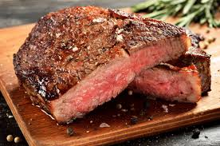
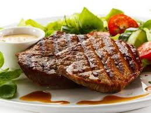
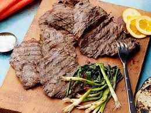
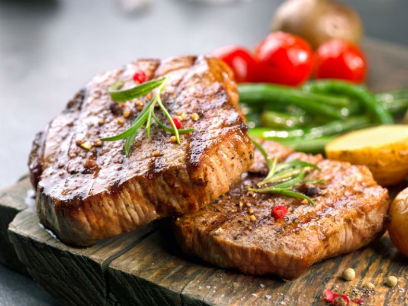

Los 5 mejores cortes de carne
Rib Eye
Es un filete de la costilla de res blanda al paladar con un poco más de grasa que la mayoría, eso es lo que lo caracteriza al resto de los cortes, gracias a estas cualidades, logra un sabor muy particular y pueda tener una apariencia exterior dorada. También, tiene un poco de hueso.
New York Steak
Similar al Rib Eye, pero con marmoleo medio y textura firme, ligeramente magro, sin hueso y que lo mismo puede prepararse a la parrilla que al carbón o al horno. Se recomienda cocinar en un término 3/4 para que no pierda su jugo.
T-Bone

Como su nombre lo dice, este corte posee lomo y filete separado por un hueso en forma de ‘T’. Posee marmoleo ligero y es muy suave. La recomendación es que sean cortes de 3/4 de pulgada en adelante y en término de 3/4 para conservar su frescura.
Arrachera
Es muy suave y con poca grasa. Por lo general se consume a la parrilla y por su gran sabor tiene gran demanda en el mercado. Se trata de una faja de carne larga y gruesa que puede ser marinada. Se cocina regularmente al carbón o a la parrilla.
Churrasco
Corte muy limpio, sin grasa, sin nervios, poca cantidad de marmoleo y sin hueso, proviene de la parte superior del lomo a la altura del aguayón. Es un corte fino, de forma ovalada y es de grandes dimensiones en comparación de los demás debido a que se moldea la pieza con película plástica para su congelación.